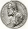

ASSOCIAZIONE GUASTALLESE
DI STORIA PATRIA
1933

1507 – 2007
500° DELLA NASCITA DI FERRANTE GONZAGA
La ricorrenza, che nell’imminente anno 2007 vedrà la realizzazione di molteplici iniziative, tanto più motivate in Guastalla, non poteva mancare di trovare in A.G.S.P. un referente particolarmente attento. Nel 1539 iniziò la signoria che per 207 anni si legò integralmente alla storia della città, poi indissolubilmente alla sua memoria. Benchè Ferrante non possa essere considerato “signore residenziale” in riferimento a Guastalla, tuttavia le iniziative da lui prese segnarono il “nuovo” carattere del luogo. Dalla riforma urbanistica (mura e nuovi edifici) a quella sociale (qualificazione degli abitanti e introduzione di famiglie distinte) a quella di governo (organizzazione signorile, amministrazione municipale, severa e inflessibile amministrazione della giustizia, istituzione dell’Archivio pubblico), non ci fu ambito in Guastalla che non fosse rivisto alla luce delle più aggiornate metodologie di conduzione di uno stato, sia pur di piccole dimensioni. Tale fu il lascito di Ferrante I che ancora in pieno XVIII secolo i suoi discendenti, ormai duchi sovrani e tra i pochi sovrani “italiani”, potevano porre a credito con la corte imperiale le benemerenze dell’illustre antenato. Si tratta dunque di una storia dalla quale non è possibile prescindere, ma non solo, della quale occorre dare conto. Così A.G.S.P., prima ancora di dare corso a specifiche ricerche “ferrantiane”, che pure si faranno, ha ritenuto proprio compito precipuo porre a disposizione di chi si accinga a studiare la figura di Ferrante, o anche solo ad interessarsi alle sue vicende, centrali nell’epoca di Carlo V, quanti più materiali sia stato possibile “tradurre” on – line. Sono note le difficoltà, molte volte, per accedere a tali ed altri materiali (orari degli Istituti, condizione delle fonti, tempi lavorativi o di studio sempre più compressi, distanze, ...). Poter disporre, senza limitazioni fisiche, delle basi per la soddisfazione della conoscenza o dell’interesse crediamo sia un valore altamente condivisibile. Quindi A.S.G.P. proseguirà per tutto il 2007 in questa iniziativa, che nasce per una circostanza ma è destinata a protrarre il suo valore per il futuro.